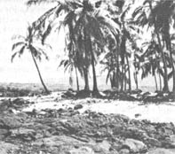

MOTORING IN MEXICO
You may think that soaring fuel prices have made long car trips a thing of the past, but "the good old days" still exist south of the border with - at the time of this writing - regular gasoline selling at 68 cents (U.S.) a gallon and no-lead for about 80 cents . Better yet, a joint program - developed by Pemex, Mexico's government oil company, and the Department of Tourism - is in the process of modernizing the country's 3,000 gas stations . . . supplying them with hotel and restaurant information and lists of points of interest.
One unique feature of Mexican motoring is the nation's free rescue service. Department of Tourism staff members known as "Green Angels" patrol all major highways from about 8:00 a.m. to 9:00 p.m. (and, because of the unexpected wild and domestic animals that can pop out in front of your headlights without warning, it's not really a good idea to drive Mexican roads after dark). All assistance given by the "Angels" is free, and spare parts are provided at cost.
Mexican auto insurance is a must, however, since a U.S. policy isn't valid abroad. (You can simply purchase your insurance right at the border . . . the most popular company seems to be Sanborn's.)
THRIFTY IS AS THRIFTY DOES
If you want to fly across the Rio Grande and then rent a car in Mexico (or if you want just temporary transportation in the U.S. or Canada, for that matter), check out Thrifty Rent-A-Car which (at the time this article is being written) will provide a Citation or similar car - with insurance and unlimited mileage - for only $23 per day.
One of MOTHER's staffers, who recently used Thrifty during a long trip in the western U.S., reports: "There was no question as to which was the best rental car agency to work with . . . at least under the conditions in which I was traveling.
"Other companies promised 'free' or 'unlimited' mileage in their ads . . . but their offers always either had strict limitations or were qualified by clauses that made them worthless. Only Thrifty really and truly did have a low-rate, unlimited mileage contract that gave me a tremendous bargain for my money."
ROAD RX
Folks who do a great deal of driving - when on vacation or otherwise - will get a lot of use out of the $2.25 "tire safety kit" . . . available from the Tire Industry Safety Council (write the agency at Dept. TMEN, Box 1801, Washington, D.C. 20013). The package fits in a standard glove compartment, and contains air pressure and tread gauges, valve caps, and tire care tips.
B & B IN HAWAII
Bargains are hard to find these days in Hawaii, but Bed & Breakfast Homes (you have your choice of city or country . . . by the sea or in the mountains) offer downright reasonably priced lodging. Not only can you get a rate that varies from $14 to $25 single and $19 to $35 double . . . but some of the houses are quite luxurious, and all the host families have been carefully screened.
In addition to the money you'll save, we think you'll like the "B & B" personal approach and enjoy the opportunity to get a look at day-to-day life in the islands that you'd never have a chance to see if staying in a hotel.
For more information, write to Bed & Breakfast, Dept. TMEN, Box 449, Kapaa, Hawaii 96746.
FREE INFO
Finally, there are a number of free government pamphlets that can prevent delays and extra duty charges for overseas travelers. Send for "Travel Pack", Dept. TMEN, U.S. Customs Service, Washington, D.C. 20209 to get your copies.
And don't forget to keep those travel tips coming!
|
One of Mexico's bustling produce markets. |
Palm trees grace Hawaii's fine beaches |
 |